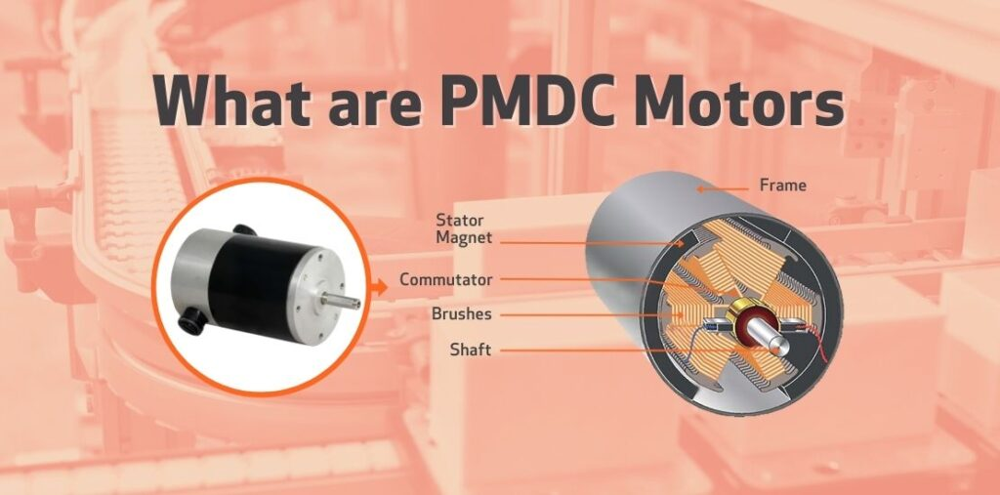
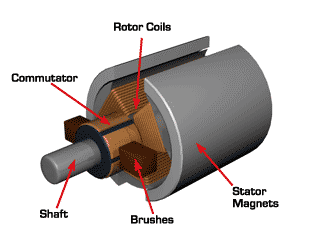
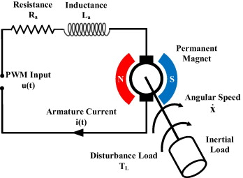
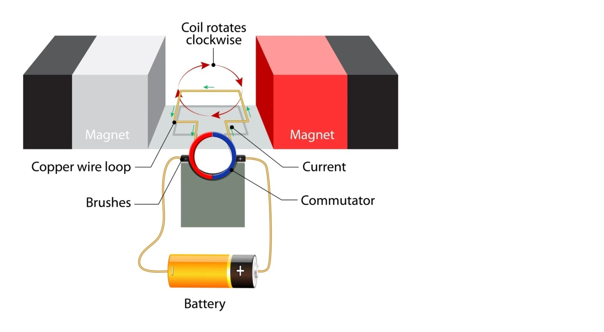
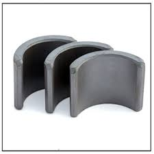

Permanent Magnet DC Motor
What is PMDC Motor
A permanent magnet DC motor (PMDC motor) is a type of DC motor that incorporates magnets in its design. Unlike a conventional DC motor that uses windings to generate the required magnetic field, a PMDC motor uses permanent magnets — hence its name. This results in a more compact and efficient design, albeit with some unique challenges.
Construction of Permanent Magnet DC Motor
Permanent Magnet DC motor, also known as a PMDC motor, is a type of electric motor that operates on the principles of electromagnetism. Let’s break down its construction into key components:
Stator:
The stator is the stationary part of the motor, and it does not move during operation. In a PMDC motor, the stator contains permanent magnets. These magnets create a definite magnetic field.
Rotor:
The rotor is the rotating part of the motor, and it is the component that spins when the motor is powered. In a PMDC motor, the rotor is equipped with coils of wire. These coils are part of the armature.
Armature:
The armature is an important part of the rotor, which contains the coils or windings. These windings are usually made of copper wire. When electric current flows through the armature winding, it produces a magnetic field. The interaction between this magnetic field and the fixed magnetic field of the stator causes the rotor (and consequently, the shaft) to rotate.
Commutator:
The commutator is a rotary switch connected to the armature. It helps in reversing the direction of current in the armature winding at the right time. This reversal of current ensures that the magnetic forces between the stator and the rotor are always in the same direction which keeps the motor rotating in the same direction.
Brush:
Brushes are conductive elements that maintain electrical contact with the rotating commutator. They allow current to flow into the armature winding, providing the necessary electrical connection between the stationary part (stator) and the rotating part (armature).
 The working principle of a Permanent Magnet DC Motor (PMDC Motor)
- PMDC motors have permanent magnets fixed on the stator (the stationary part of the motor). These magnets create a constant magnetic field.
- PMDC motor has permanent magnets mounted on the stator . These magnets create a stable magnetic field.
- There is a rotating part inside the motor called the armature. It usually consists of a coil of wire.
- The armature is connected to the power source through a device called commutator. The brushes are in contact with the commutator and supply electric current to the armature.
- When you connect the motor to a power source (like a battery), electric current flows through the armature coil.
- According to the Lorentz force law, when a current carrying conductor is placed in a magnetic field (produced by a permanent magnet), it experiences a force. This force causes the armature to rotate.
- The continuous change in the direction of the current and the resultant force on the armature keep the motor rotating. This rotation can be used to perform mechanical work, such as turning a fan, driving a robot, or many other applications.
A PMDC motor operates by creating a magnetic field using permanent magnets, passing electric current through a coil in the rotating part (armature), and using the interaction between the magnetic field and the current to generate a continuous rotation.
Magnets used in PMDC motors come from three types of materials:
Alnicos magnets
Alnicos feature a high residual flux density and low coercive magnetizing intensity. Hence, they are mostly used in applications where a low current is required at high voltage.
Ferrite magnets
Ferrite magnets tend to be lower in costs are are used in PMDC motors for cost-sensitive applications such as refrigerators, AC units or compressors.
Rear earth magnets
Rear earth magnets are composed of neodymium-iron-boron or of samarium cobalt. They feature a high coercive magnetizing intensity and high residual flux. These magnets do not suffer demagnetizing issues due to armature reactions.
Rear earth magnet materials tend to be quite expensive. Within these, Neodymium iron boron costs lower than samarium cobalt, and can also withstand high temperatures. Rear earth magnets are used in PMDC motors for size-sensitive applications including automobiles, servo industrial drives and in large industrial motors
Advantages of Permanent Magnet DC Motors:
There are numerous advantages of PMDC motors that make them highly sought after in several industries. Let’s delve into a few of these advantages:
- Efficiency: Since there is no need to induce a magnetic field in the stator, PMDC motors tend to be more efficient compared to their counterparts. This is because there is no power loss due to the magnetization of the stator.
- Compactness: The use of permanent magnets reduces the need for windings on the stator, which results in a smaller motor size for a given power output. This makes PMDC motors suitable for applications where space is a limitation.
- Speed and Torque: PMDC motors offer excellent speed control and high torque. This makes them ideal for applications where precise speed and torque control is required.
Disadvantages of Permanent Magnet DC Motors:
Despite their many advantages, PMDC motors also have some limitations:
- Magnet Demagnetization: One of the main drawbacks is the risk of magnet demagnetization. This can occur due to high temperatures or a large external magnetic field, which can result in a loss of motor efficiency.
- Cost: Permanent magnets, especially those made from rare earth materials, can be expensive, which can increase the cost of the motor.
- Control Complexity: PMDC motors can require more complex control systems compared to their counterparts, especially in high power applications. This can make the design and implementation of these motors more challenging.
Applications of Permanent Magnet DC Motors:
Thanks to their benefits, PMDC motors find extensive applications in a variety of fields:
- Automotive Applications: These motors are widely used in electric vehicles due to their high efficiency and compact size. They are also found in windshield wipers, power windows, and fan blowers.
- Home Appliances: PMDC motors are used in appliances such as mixers, vacuum cleaners, and washing machines where high torque and speed control are necessary.
- Industrial Applications: Due to their high power density and compactness, these motors are used in various industrial applications like conveyors, pumps, and lifts.

Buy full version to unlock all the content & features